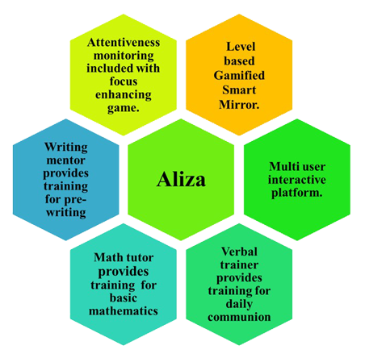
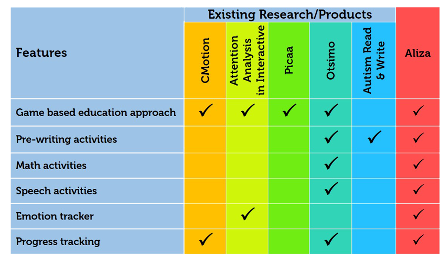
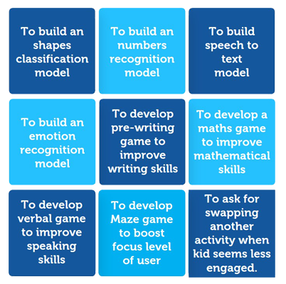
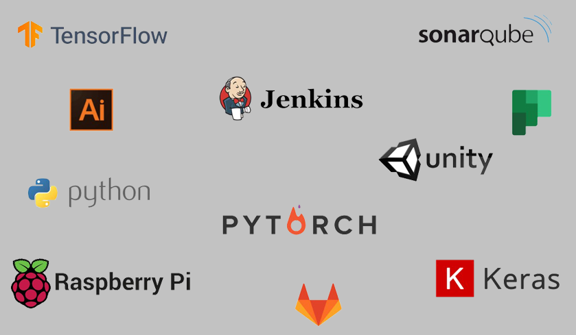

Introduction

- Autism is a neurodevelopmental disorder that causes difficulties in communication, emotional responsiveness and social skills.
- Number of expermental studies proves that ASD children are more engaged with mirror than the children with Down syndrome during the self-recognition test.
- This research represents “Aliza”, a smart mirror with series of activities that would help to develop different skills of the children with ASD.
- Aliza consists four main core components such as Writing Mentor, Math tutor, Verbal Trainer, and Attentiveness Tracker.
Literature Survey
Technology usage has prominently risen in intervention and researches of ASD. People with autism are often overwhelmed by the demands of human interaction. To beat this problem, number of researches have started to explore ways to use AI to teach Autism children.
Acapela group have invented a robot with facial expressions and a screen to display the instruction. MILO’s functionalities are turn-on emotions, join attentions, speaking activities, improve social behaviors and imitations. MILO is more like a peer who will always keep interacting with the ASD child. Only humans will get bored or feel lazy to do things repetitively, however milo is a robot that doesn’t have any feelings such as laziness or tired. It will always keep interacting with the student with recurring positive3 enforcement. The objective of the robot is to develop social and behavior skills by continuously encouraging positivity for the ASD student. ["Meet Milo! | Robots4Autism", obots4autism.com, 2020.]
Humanoid robot NAO, created by Softbank Robotics has its capability to blink its eyes, speak and play music which can entice the children’s interest to engage in communication. Both humanoid robot Milo and NAO especially focus on training the social and communication skills. [S. Shamsuddin,"Humanoid Robot NAO Interacting with Autistic Children of Moderately Impaired Intelligence to Augment Communication Skills", 2012.]
Moreover, there are wide ranges of applications which are game oriented to develop their different skills. Finkelstein et al designed a game "CMotion" that will use virtual humans to teach emotion recognition and programming concepts to Autism children. This is designed to teach the intended users how to recognize facial expressions and manipulate an interactive virtual character using a visual drag-and-drop programming interface.
They found that the system of virtual human teaching has increased learning capacity and learning interest than a system of regular classroom teaching to Autism children. [Finkelstein, “cMotion : A New Game Design to Teach Emotion Recognition and Programming Logic to Children using Virtual Humans”,2009]
Ould Mohamed developed an educational personalized games activity with behavior tracker during the game session. It helps to Autism children to focus their attention on a specific task. [Abdallahi Ould Mohamed, “Attention Analysis in Interactive Software for Children with Autism”, 2008]
Alvaro Fernandez-Lopez devised a mobile platform based on iPad and iPod touch devices called Picaa for people with special needs. Picaa is a platform to design educational activities such as Exploration, Association, Puzzle and Sorting activities. Its aim is to help special needs children to learn basic education. [Alvaro Fernandez-Lopez, “Mobile learning technology based on iOS devices to support students with special education needs”, 2012] Otsimo is a mobile application that helps the ASD students to learn numbers, colors and shapes. [E. Ltd, "Otsimo | Special Education ABA Review | Educational App Store", Educational App Store, 2020.] Autism Read & Write is an app with simple activities like finding given object’s name. [Green Bubble Labs, "Autism Read & Write", Google App Store, 2020] Even though these applications provide activities and games like Aliza, it fails to provide an integrated solution to develop multiple skills.
Research Gap

Research Problem
- The technical tools and computer-based software in practice are not sufficient to teach ASD children.
- Existing mechanisms, doesn’t meet the educational needs of ASD children.
- Existing robots to teach ASD children however they are very expensive.
Research Objectives
Main Objective
- The main objective is to implement a smart mirror that helps to improving the writing kills, basic mathematical skills, verbal skills and focusing skills of ASD children. Also, accustoming modern technology learning system among the ASD children.
Specific Objectives 
Methodology
Data Collection
- This study gathered primary data from randomly selected 100 ASD children between the age of 5 to 12 from 5 selected schools in Jaffna.
Hardware Components
Software Components
- Aliza provides games with Deep Learning based evaluation system and an attentiveness tracker to track users emotions throughout the game.
1) Writing Mentor Sub-System
- Aliza provides games with Deep Learning based evaluation system and an attentiveness tracker to track users emotions throughout the game.
- To evaluate pre-writing drawn shapes, the proposed system used a Twelve-layer convolutional neural network with one input layer with ten hidden layers and one output layer.
1) Math Tutor Sub-System
- Hand written numbers are identified using convolutional neural network.
- Data collected from ASD students is been used to train the CNN model and it has an accuracy of 80%.
- Mnist data set is used to test the accuracy of comparing both ASD and non ASD students to calculate the progress of the user.
1) Verbal Trainer Sub-System
- Data augmentation is done by merging noise data with training data.
- For every microphone input, system computes MFCC and send the features to a pre-trained CNN model to classify the label of spoken word.
1) Attentiveness Tracker
- A video input stream is taken as an input then the frontal face is detected.
- Detected face is matched with pre-trained 7 layered CNN model and predicts the facial emotion within happy, sad, neutral, disgust, fear, angry, surprise emotions then labializes and send it back to the game to swap the activity.
Technologies Used
